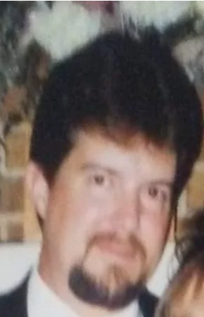

Jett Blackcloaks
Scholar – Elsecaller
I am a human scholar with a focus on planning and building. I am intellectual and disciplined, though perhaps not the strongest physically.
I have begun to walk the path of the Elsecaller, driven by a desire to reach my true potential.